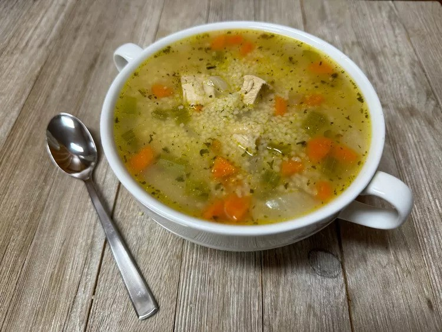

Couscous Chicken Soup

Description
Making this flavorful chicken couscous soup with an herb and mushroom
couscous mix gives a nice change from noodles. It's a one-pot meal that
is ready in under an hour.
Ingredients
- 2 tablespoons unsalted butter
- 1 onion, chopped
- 2 carrots, peeled and diced
- 3 stalks celery, diced
- 1 1/4 pounds cubed cooked chicken breasts
- 8 cups chicken broth
- 1/2 tablespoon dried parsley flakes or dried dill
- 1/2 teaspoon salt
- 1/4 teaspoon ground black pepper
- 2 (5.4 ounce) boxes herb couscous mix (such as Near East® Wild Mushroom & Herb Couscous Mix)
Steps
- Melt butter in a large stock pot over medium-high heat. Add onion, carrot,
and celery, and cook and stir for 5 minutes.
- Add chicken, broth, parsley, salt, and pepper. Bring to a boil, reduce heat,
and simmer 20 minutes.
- Add couscous and cook 7 minutes more. Ladle into bowls and serve.